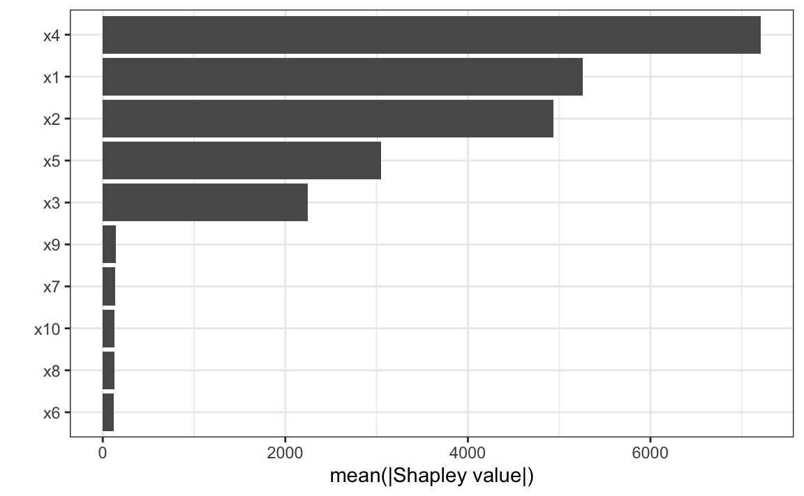
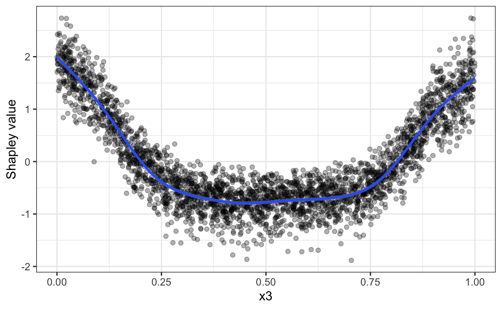
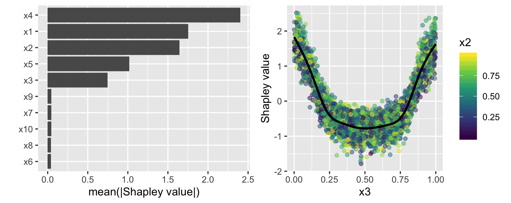
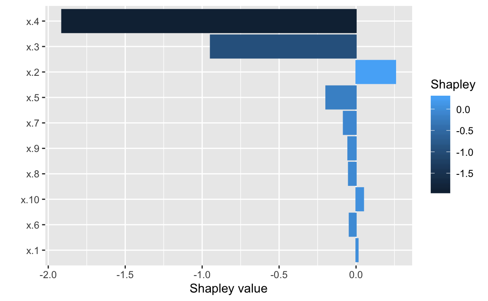
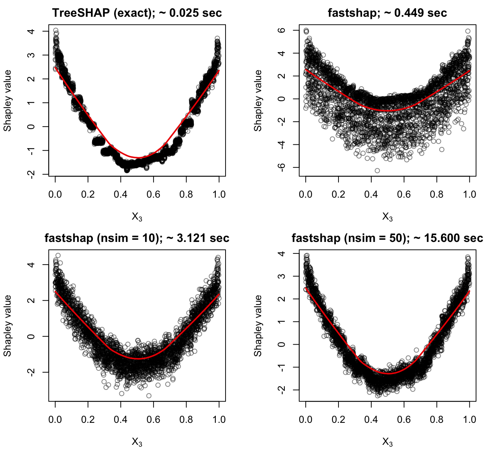
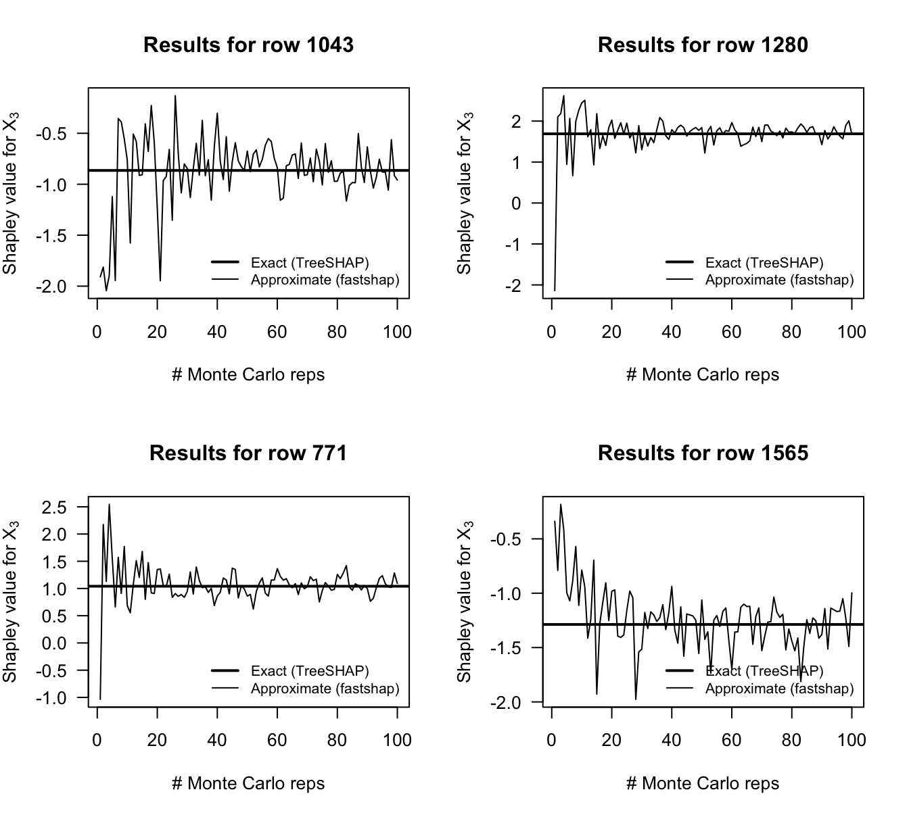
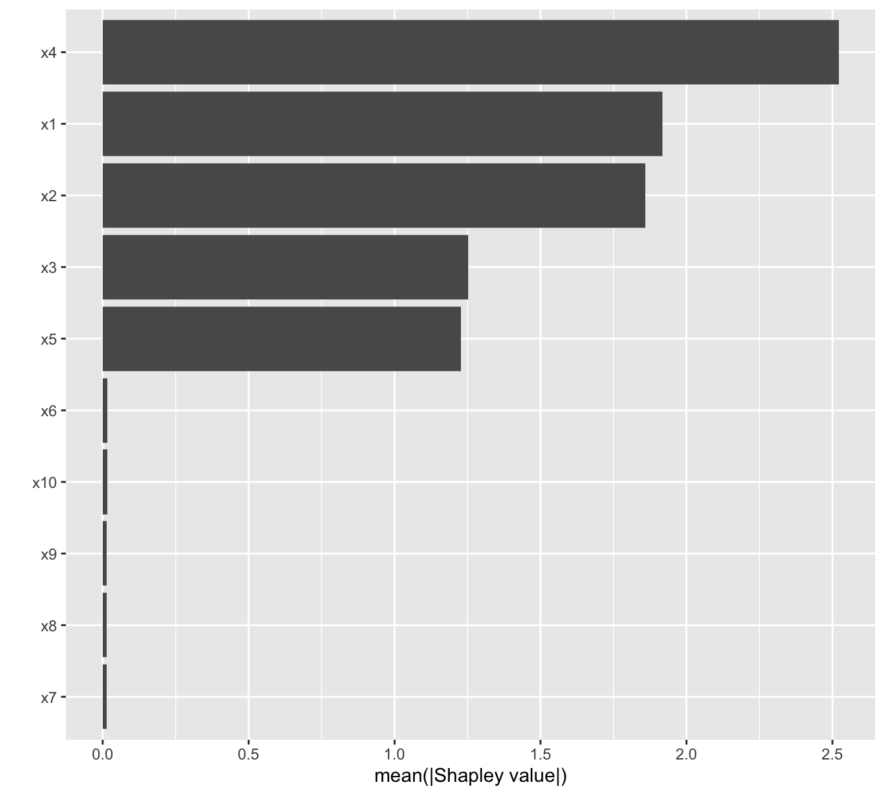

Background
The approach in this package is similar to what’s described in Algorithm 1 in Strumbelj and Kononenko (2014) which is reproduced below:

The problem with this approach is that it requires many calls to the scoring function f(). In particular, if we have N training records and p features, than this algorithm would require 2mnp calls to f() in order to obtain approximate Shapley values for the entire training set. The approach we take is similar, but rather than computing each Monte Carlo estimate one at a time, we construct all the data required to compute the approximate Shapley values for a single feature at once and only use two calls to f(). Using this approach only requires 2mp calls to f() to obtain approximate Shapley values for all p features for the entire training set. Hence, this approach will scale better to larger training sets. Also, the data instances b1 and b2 are built efficiently for each row in the training set (or subset thereof) all at once and stacked on top of each other in a data frame or matrix using C++ and logical subsetting. We can also parallelize the algorithm across m or p, depending on which one is more beneficial.
NOTE: Although fastshap efficiently employs the sampling approach to computing approximate Shapley values, the package also supports exact approaches for certain classes of linear models gradient boosted decision trees (e.g., xgboost).
Example
The following example demonstrates the basic usage of the fastshap package.
# Load required packages
library(fastshap) # for fast (approximate) Shapley values
library(mlbench) # for Friedman 1 benchmark data set
library(ranger) # for fast random forest algorithm
# Simulate training data
set.seed(101)
trn <- as.data.frame(mlbench.friedman1(3000))
X <- subset(trn, select = -y) # feature columns only
# Fit a random forest
set.seed(102)
rfo <- ranger(y ~ ., data = trn)
# Prediction wrapper
pfun <- function(object, newdata) {
predict(object, data = newdata)$predictions
}
# Compute fast (approximate) Shapley values using 10 Monte Carlo repetitions
system.time({ # estimate run time
set.seed(5038)
shap <- explain(rfo, X = X, pred_wrapper = pfun, nsim = 10)
})
#> user system elapsed
#> 90.000 1.339 18.477
# Results are returned as a tibble (with the additional "shap" class)
shap
#> # A tibble: 3,000 x 10
#> x.1 x.2 x.3 x.4 x.5 x.6 x.7 x.8 x.9
#> <dbl> <dbl> <dbl> <dbl> <dbl> <dbl> <dbl> <dbl> <dbl>
#> 1 -0.0894 0.839 -0.438 -3.21 0.0344 -0.110 2.00e-4 -1.82e-4 -0.0865
#> 2 -4.39 1.11 1.01 -0.00996 1.13 -0.0195 1.41e-1 -5.47e-2 0.109
#> 3 1.35 1.72 -1.11 -3.47 -0.739 -0.0468 7.94e-3 -1.55e-2 0.0524
#> 4 1.72 -3.24 -0.293 3.37 0.320 0.0329 8.20e-2 2.14e-2 0.0457
#> 5 -1.54 -1.96 0.0507 3.72 1.64 -0.0377 1.91e-2 8.76e-2 0.0454
#> 6 -0.979 1.22 -1.00 -1.60 1.15 0.0607 8.84e-3 -2.02e-3 -0.157
#> 7 0.650 2.03 1.44 -3.25 -0.0564 0.0859 6.81e-2 7.19e-2 0.0830
#> 8 -1.22 -1.88 0.304 4.86 -0.0709 -0.0442 -7.67e-3 -3.37e-2 -0.0326
#> 9 1.59 1.22 -0.548 3.60 -0.765 0.0583 -1.11e-1 -6.25e-3 0.132
#> 10 1.10 -2.36 -1.15 -1.49 0.927 -0.0437 -3.44e-2 3.01e-2 -0.142
#> # … with 2,990 more rows, and 1 more variable: x.10 <dbl>You can use the results to help interpret the model in many different ways. For example, in the code chunk below we take the sum of the absolute value of the Shapley values within each feature to construct a Shap-based feature variable importance plot:
# Load required packages
library(ggplot2)
theme_set(theme_bw())
# Aggregate Shapley values
shap_imp <- data.frame(
Variable = names(shap),
Importance = apply(shap, MARGIN = 2, FUN = function(x) sum(abs(x)))
)
# Plot Shap-based variable importance
ggplot(shap_imp, aes(reorder(Variable, Importance), Importance)) +
geom_col() +
coord_flip() +
xlab("") +
ylab("mean(|Shapley value|)")
We can also plot the Shapley values for each feature to construct Shap-based dependence plots:
shap_dep_x3 <- data.frame(x3 = X[["x.3"]], shap = shap[["x.3"]])
ggplot(shap_dep_x3, aes(x3, shap)) +
geom_point(alpha = 0.3) +
geom_smooth() +
ylab("Shapley value")
#> `geom_smooth()` using method = 'gam' and formula 'y ~ s(x, bs = "cs")'
You can also use autoplot() to construct simple plots:
p1 <- autoplot(shap)
p2 <- autoplot(shap, type = "dependence", feature = "x.3", X = X, alpha = 0.5,
color_by = "x.2", smooth = TRUE, smooth_color = "black") +
scale_color_viridis_c()
gridExtra::grid.arrange(p1, p2, nrow = 1)
#> `geom_smooth()` using method = 'gam' and formula 'y ~ s(x, bs = "cs")'
By default, explain() computes approximate Shapley values for all rows in the training data. If you want Shapley values for new instances (or a subset of the training set), they must be supplied via the newdata argument. This functionality is demonstrated in the code chunk below. (NOTE: explain() is not yet optimized for this case; that is, computing only a handful of Shapley values for a few instances (in this case, at least for now, consider using the iml function Shapley()).)
# Explanations for first observation; technically `drop = FALSE` isn't necessary
# here since X is a data frame
explain(rfo, X = X, pred_wrapper = pfun, nsim = 10,
newdata = X[1, , drop = FALSE])
#> # A tibble: 1 x 10
#> x.1 x.2 x.3 x.4 x.5 x.6 x.7 x.8 x.9 x.10
#> <dbl> <dbl> <dbl> <dbl> <dbl> <dbl> <dbl> <dbl> <dbl> <dbl>
#> 1 -0.391 0.987 -0.595 -2.74 -0.378 -0.0563 -0.0205 0.0456 0.0363 -0.00262
# Explanations for first three observations
explain(rfo, X = X, feature_names = c("x.1", "x.10"), pred_wrapper = pfun,
nsim = 10, newdata = X[1:3, ])
#> # A tibble: 3 x 2
#> x.1 x.10
#> <dbl> <dbl>
#> 1 -1.49 -0.0265
#> 2 -4.53 0.00751
#> 3 1.33 0.0690
# Plot individual explanations
expl <- explain(rfo, X = X,pred_wrapper = pfun, nsim = 10, newdata = X[1L, ])
autoplot(expl, type = "contribution")
Parallel execution
With fastshap you can compute contributions for multiple features in parallel using any parallel backend supported by the foreach package. This is illustrated in the code chunk below.
# Load required packages
library(doParallel)
# Set up parallel backend
cl <- if (.Platform$OS.type == "unix") 8 else makeCluster(8)
registerDoParallel(cl)
# Compute Shapley values in parallel
explain(rfo, X = X, pred_wrapper = pfun, nsim = 10, .parallel = TRUE)
#> # A tibble: 3,000 x 10
#> x.1 x.2 x.3 x.4 x.5 x.6 x.7 x.8 x.9
#> <dbl> <dbl> <dbl> <dbl> <dbl> <dbl> <dbl> <dbl> <dbl>
#> 1 0.0112 0.839 -1.02 -1.95 0.497 1.32e-2 -0.00378 -0.0302 -0.106
#> 2 -4.08 1.49 0.509 -0.527 2.16 5.88e-2 0.0816 -0.0338 -0.0483
#> 3 1.73 2.33 -1.20 -4.42 -1.25 -8.50e-4 0.0250 -0.0803 -0.0126
#> 4 2.39 -1.27 0.110 3.84 1.24 3.64e-3 -0.00605 0.0286 0.0469
#> 5 -1.38 -0.855 -0.224 2.17 0.308 1.58e-2 0.0869 0.0798 0.00112
#> 6 1.60 1.35 -0.876 -2.41 1.28 9.94e-2 0.0488 -0.133 -0.158
#> 7 1.43 2.30 1.07 -3.77 -0.915 -1.10e-2 -0.0665 -0.0145 0.00386
#> 8 -0.875 -1.01 0.538 2.49 0.0828 1.51e-2 0.00551 0.0379 0.0398
#> 9 2.58 2.84 -0.797 4.22 -1.30 2.16e-2 0.0337 -0.0454 0.0304
#> 10 1.14 -3.18 -0.550 -3.47 1.09 -4.58e-2 -0.0516 0.0110 -0.134
#> # … with 2,990 more rows, and 1 more variable: x.10 <dbl>Comparison with TreeSHAP/TreeExplainer for XGBoost models
You can compute the contributions of each feature for XGBoost models in an efficient way using the methods described in (Lundberg 2017). These are available through the predict() function for xgboost models; see ?xgboost::predict.xgb.Booster for details. Below we compute the contributions for each feature using both methods and compare the results using a Shapley-based dependence plot on feature x.3, the results are quite surprising (no parallel processing was used to obtain the fastshap results). And remember, fastshap can be used with any prediction model in R.

We can also check that fastshap converges to the true Shapley values by comparing the results to TreeSHAP while varying the number of Monte Carlo repetitions:

Finally, starting with fastshap version 0.0.4, you can request exact Shapley values for xgboost and linear models (i.e., models fit using stats::lm() and stats::glm()). This is illustrated in the code chunk below where we use fastshap::explain() to compute exact explanations using TreeSHAP from the previously fitted xgboost model.
system.time({
shap <- explain(bst, X = data.matrix(X), pred_wrapper = pfun, exact = TRUE)
})
#> [15:32:10] WARNING: amalgamation/../src/objective/regression_obj.cu:152: reg:linear is now deprecated in favor of reg:squarederror.
#> user system elapsed
#> 0.280 0.009 0.304
autoplot(shap)
References
Scott M. Lundberg, Su-In Lee, “A Unified Approach to Interpreting Model Predictions”, NIPS Proceedings 2017, https://arxiv.org/abs/1705.07874.
Scott M. Lundberg, Su-In Lee, “Consistent feature attribution for tree ensembles”, https://arxiv.org/abs/1706.06060.
Christoph Molnar, Interpretable Machine Learning. 2019. https://christophm.github.io/interpretable-ml- book/.